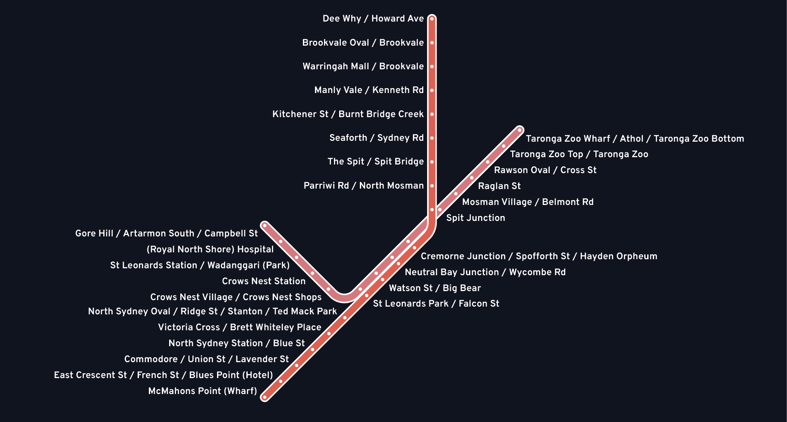
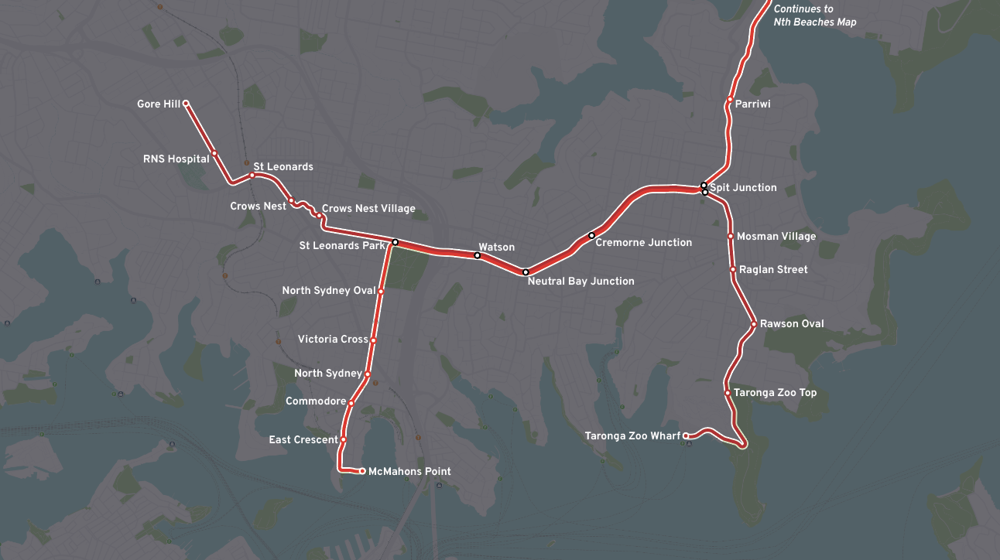
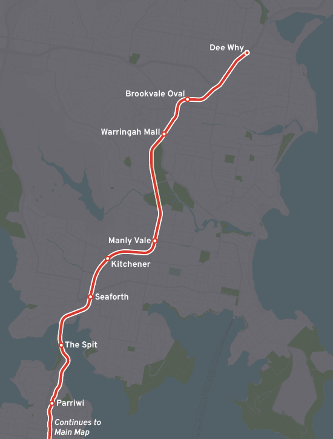
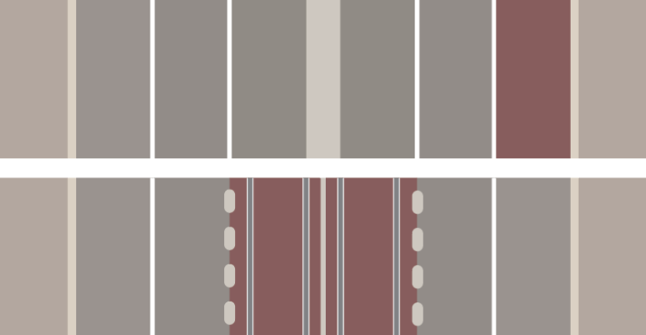
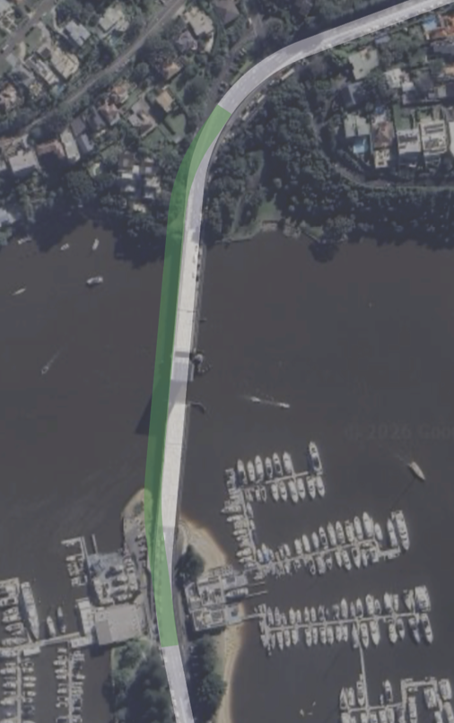

Submission to the Northern Beaches Transport Review
To Transport for NSW and the Northern Beaches Network Review team,
This submission argues that the Northern Beaches Network Review should not be limited to short-term bus route and road changes, but should also protect the long-term ability of the Northern Beaches and Lower North Shore to support higher-capacity public transport.
In particular, we recommend that Transport for NSW future-proof Military Road, Spit Road and the wider Northern Beaches corridor for a future street-running light rail network, supported in the short and medium term by bus priority infrastructure designed for eventual light rail conversion. We also recommend a rebuild of the Spit Bridge.
Military Road is one of Sydney’s most important bus corridors. It carries a very high volume of public transport services between the Northern Beaches, Mosman, Neutral Bay, Cremorne, North Sydney and the Sydney CBD. However, the corridor is also highly constrained, heavily congested, and increasingly unable to scale through bus services alone.
The key recommendation of this submission is that any future changes to Military Road should preserve the option for a centre-running light rail alignment.
High-demand bus corridors should be treated as potential future light rail corridors, not simply as permanent bus-only corridors.
Proposed network components
- The Gore Hill Branch
- The McMahons Point Branch
- The Military Road Core
- The Taronga Zoo Branch
- The Northern Beaches Branch
1. Strategic rationale
The Lower North Shore and Northern Beaches have some of the most constrained transport geography in Sydney. Road access is concentrated into a limited number of corridors, particularly Military Road, Spit Road, Manly Road, Condamine Street and Pittwater Road.
The current bus network is essential, but it has clear long-term limitations. As demand increases, simply adding more buses can worsen congestion, increase dwell times at stops, and create more conflict at intersections and kerbsides.
Light rail offers a stronger long-term solution for the highest-demand parts of this corridor. It provides higher passenger capacity per vehicle, a more legible network structure, better integration with town centres, and a stronger basis for transit-oriented public domain improvements.
The review should therefore establish a clear public transport hierarchy:
- Metro as the regional high-speed trunk network
- Light rail as the medium-capacity surface distributor through dense corridors and centres
- Buses as local feeders, orbital connectors and lower-density coverage services
2. Integration with Sydney Metro
The proposed light rail network would not compete with Sydney Metro. Instead, it would complement it.
Sydney Metro provides high-speed, high-capacity access to the CBD and broader metropolitan network. However, metro stations alone do not provide fine-grain access across the Lower North Shore or Northern Beaches.
The proposed light rail network would integrate with metro at:
- Victoria Cross, via the McMahons Point Branch
- Crows Nest, via the Gore Hill Branch
- Dee Why, if a future Northern Beaches Metro reaches that centre
There should also be provision for a future extension of the light rail network to Manly.
3. Military Road as the core corridor
Military Road should be treated as the core spine of any future Lower North Shore light rail network.
The proposed Military Road core would begin at St Leonards Park, then continue through:
- Watson Street / Big Bear
- Neutral Bay Junction / Wycombe Road
- Cremorne Junction / Spofforth Street / Hayden Orpheum
- Spit Junction
This would require:
- protecting median space where possible
- avoiding road designs that permanently prevent light rail conversion
- designing intersections with future light rail geometry in mind
- avoiding fragmented kerbside-only bus priority where centre-running transit would be more appropriate
- coordinating road upgrades with long-term public transport planning
- treating bus lanes as potential light rail precursor infrastructure
4. Proposed light rail network
4.1 Gore Hill Branch
The Gore Hill Branch would begin on Reserve Road, with stops at:
- Gore Hill / Artarmon South / Campbell Street
- Royal North Shore Hospital
- St Leonards Station / Wadanggari Park
- Crows Nest Station
- Crows Nest Village / Crows Nest Shops
- St Leonards Park / Falcon Street
This branch would connect major employment, health and transport destinations. It would provide direct access to Royal North Shore Hospital, St Leonards Station, Crows Nest Metro and the Crows Nest village centre.
4.2 McMahons Point Branch
The McMahons Point Branch would begin at McMahons Point Wharf, with stops at:
- McMahons Point Wharf
- East Crescent Street / French Street / Blues Point Hotel
- Commodore / Union Street / Lavender Street
- North Sydney Station / Blue Street
- Victoria Cross / Brett Whiteley Place
- North Sydney Oval / Ridge Street / Stanton Library / Ted Mack Park
- St Leonards Park / Falcon Street
This branch would provide a strong ferry–rail–metro–light rail connection.
4.3 Military Road Core
The Military Road Core would run from St Leonards Park to Spit Junction, with stops at:
- St Leonards Park / Falcon Street
- Watson Street / Big Bear
- Neutral Bay Junction / Wycombe Road
- Cremorne Junction / Spofforth Street / Hayden Orpheum
- Spit Junction
This would be the main trunk of the network, carrying overlapping services from the Gore Hill, McMahons Point, Zoo and Northern Beaches branches.
4.4 Taronga Zoo Branch
The Taronga Zoo Branch would begin at Spit Junction, with stops at:
- Spit Junction
- Mosman Village / Belmont Road
- Raglan Street
- Rawson Oval / Cross Street
- Taronga Zoo Top / Taronga Zoo
- Taronga Zoo Wharf / Athol / Taronga Zoo Bottom
This branch would serve both local and tourism demand, creating a clear and legible route to Taronga Zoo while also improving access for Mosman residents.
4.5 Northern Beaches Branch
The Northern Beaches Branch would begin at Spit Junction, with stops at:
- Parriwi Road / North Mosman
- The Spit / Spit Bridge
- Seaforth / Sydney Road
- Kitchener Street / Burnt Bridge Creek
- Manly Vale / Kenneth Road
- Warringah Mall / Brookvale
- Brookvale Oval / Brookvale
- Dee Why / Howard Avenue
This would be the main Northern Beaches branch and would form the long-term surface transit spine from the Lower North Shore to Dee Why.
Spit Bridge replacement
A future light rail corridor to the Northern Beaches would also require serious consideration of the long-term role of the Spit Bridge.
The current Spit Bridge is one of the most significant physical constraints on the Military Road–Spit Road–Manly Road corridor. Its opening span creates an unavoidable disruption to road-based transport, including buses, private vehicles, freight and emergency access.
The North Sydney Boys High School Transit Club recommends that Transport for NSW investigate the long-term replacement of the Spit Bridge with a higher fixed bridge, constructed immediately to the west/left of the existing bridge alignment.
This should include provision for:
- dedicated public transport priority
- future light rail tracks or safeguarded light rail space
- improved pedestrian and cycling facilities
- safer and more reliable road geometry
- reduced disruption from bridge openings
- better long-term resilience for emergency and public transport access
5. Bus priority as a transition stage
The North Sydney Boys High School Transit Club supports improved bus priority, but it should be designed as part of a staged pathway toward light rail rather than as a permanent endpoint.
Short-term bus priority should include:
- continuous bus lanes where possible
- transit signal priority
- rationalised stopping patterns
- better interchange design, with improved pedestrian access to stops
- reduced conflict between buses and general traffic
6. Station and stop design principles
Major interchange stops
- Victoria Cross
- Crows Nest
- St Leonards
- Dee Why
These stops should have:
- larger platforms
- strong pedestrian access
- clear interchange paths
- weather protection
- high-quality wayfinding
- integration with bus and metro services
Major centre stops
- Spit Junction
- Neutral Bay Junction
- Cremorne Junction
- Mosman Village
- Warringah Mall
- Brookvale Oval
Local access stops
- Parriwi
- Kitchener
- Manly Vale
- Raglan Street
- Rawson Oval
- East Crescent
7. Service pattern concept
The proposed network should operate as an interlined street-running light rail system.
Possible service patterns could include:
- Northern Beaches to McMahons Point
- Northern Beaches to Gore Hill / St Leonards
- Zoo Branch to Gore Hill / St Leonards
- McMahons Point to Zoo Branch
- Branch terminus to Military Road short-turn services during late-night periods
- Short-turn Military Road services during peak periods
8. Urban and public domain benefits
A light rail corridor would not only improve transport capacity. It would also support better urban design.
Military Road currently functions as both a transport corridor and a village main street. Many urban planners would use the term “stroad” to describe it.
Potential urban benefits include:
- reduced bus clutter
- more legible streets
- improved pedestrian safety
- stronger village identities
- better public transport access to local businesses
- improved visitor access to Taronga Zoo and harbour destinations
- stronger transit-oriented planning around Brookvale and Dee Why
9. Risks of not future-proofing the corridor
The most significant risk is that short-term road and bus upgrades could unintentionally prevent better long-term options.
Risks of inaction include:
- worsening bus congestion
- reduced long-term corridor capacity
- increased cost of future conversion
- loss of median space
- poorer metro integration
- continued over-reliance on CBD-bound buses
- missed opportunities for public domain improvements
10. Recommended actions
- Recognise Military Road as a future higher-capacity transit corridor.
- Recommend that Military Road, Spit Road and the Northern Beaches trunk corridor be future-proofed for possible light rail conversion.
- Ensure that any bus priority upgrades are designed to be compatible with future centre-running light rail.
- Preserve or create median space along Military Road where feasible.
- Avoid irreversible road designs that would prevent fixed-track transit.
- Integrate future light rail planning with Sydney Metro at Victoria Cross, Crows Nest, St Leonards and Dee Why.
- Identify Dee Why as a future multimodal rapid transit interchange.
- Consider a staged transition from bus priority to light rail, rather than treating bus priority as the final transport outcome.
- Plan for high-quality interchange between buses, light rail, metro and ferries.
- Protect the possibility of future light rail extensions to Manly, Mona Vale, Narrabeen or other Northern Beaches centres.
- Include the proposed five-component light rail network as a long-term corridor option in future transport planning.
- Ensure councils and TfNSW coordinate planning controls, road upgrades and redevelopment decisions around future transit needs.
11. Conclusion
The Northern Beaches Network Review is an important opportunity to improve bus services in the short term. However, it should also be used to protect the long-term transport future of the Lower North Shore and Northern Beaches.
The corridor cannot rely indefinitely on adding more buses to already constrained roads. Military Road in particular should be treated as a future higher-order public transport spine.
This submission does not ask TfNSW to immediately commit to building the full network. It asks TfNSW to ensure that the option is not lost.
The review should not simply ask how to make the current bus network work slightly better. It should ask how the Northern Beaches and Lower North Shore can be prepared for the next generation of public transport.
Appendices
The original report includes network diagrams, geographical maps, a proposed Military Road cross-section and a suggested Spit Bridge replacement alignment.




